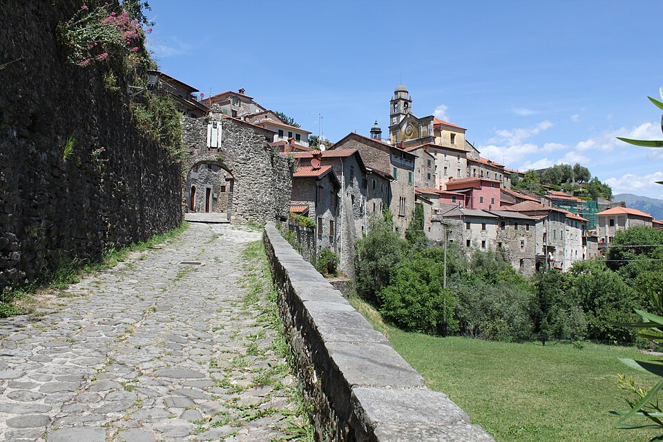
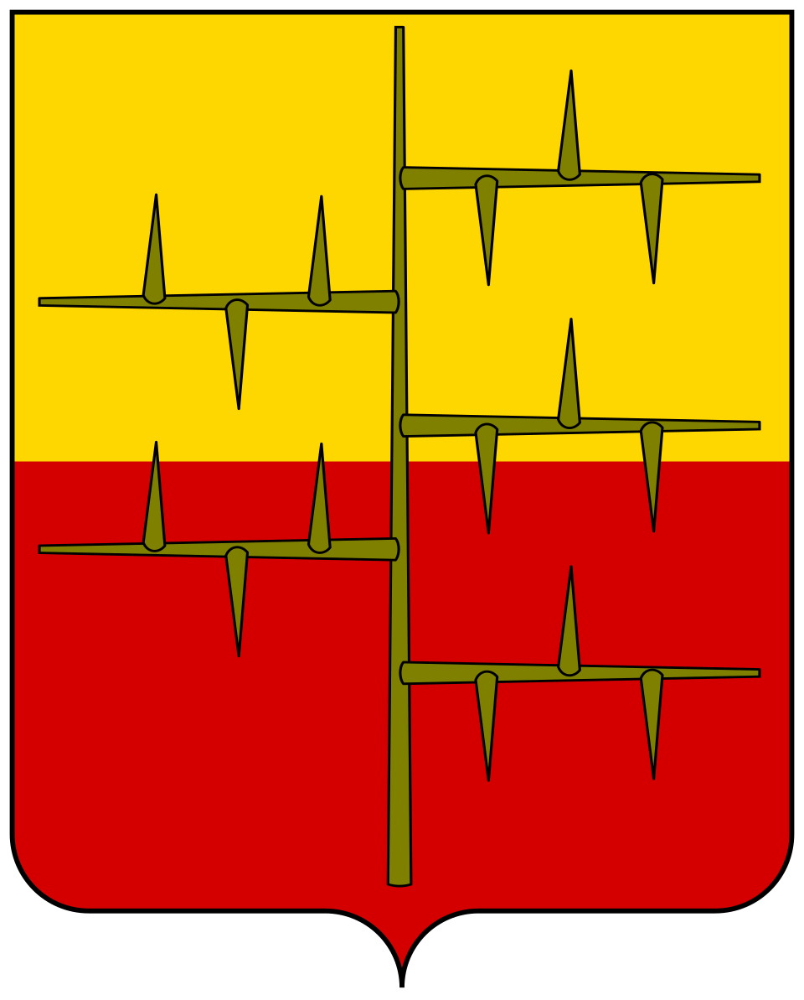

Im Jahr 1306 hielt sich Dante Alighieri in der Lunigiana auf, wo ihn die mächtige Malaspina-Familie, Herrscher der Region, willkommen hieß. Insbesondere war er Gast von Franceschino Malaspina in Mulazzo, der historischen Hauptstadt des Zweigs „Spino Secco“. Während dieses Aufenthalts spielte Dante eine wichtige politische und diplomatische Rolle: Er fungierte als Friedensvermittler im Streit zwischen den Malaspina und dem Bischof von Luni, der am 6. Oktober 1306 mit dem berühmten Frieden von Castelnuovo endete. Die Verbindung zwischen Dante und der Lunigiana spiegelt sich auch in der Divina Commedia wider, in der der Dichter das Gebiet und seine Herrscher, insbesondere die Malaspina, genau kennt. Einige Aspekte seines Aufenthalts bleiben jedoch umstritten, insbesondere die genaue Dauer und die genauen Orte, die Dante innerhalb der Lunigiana besuchte.
Das Museo Dantesco Lunigianese befindet sich im historischen Zentrum von Mulazzo und ist in einem Turmhaus aus dem 13. Jahrhundert innerhalb der mittelalterlichen Stadtmauer untergebracht.
Gegründet 2003 vom Centro Lunigianese di Studi Danteschi, widmet sich das Museum der Beziehung zwischen Dante und der Lunigiana und sammelt Dokumente, Informationspaneele und Materialien, die Dantes Aufenthalt in der Region belegen.
Die Ausstellung konzentriert sich insbesondere auf den Aufenthalt von 1306 und die Bezüge zur Lunigiana in Dantes Werk.
Die Verbindung dieses spezifischen Gebäudes mit Dantes tatsächlichem Aufenthalt ist symbolisch: Es gibt keine Beweise, dass der Dichter tatsächlich in diesem Turmhaus lebte.

Mulazzo, Zentrum Mulazzo, Zentrum
Wappen der Malaspina (Spino Secco) Wappen der Malaspina (Spino Secco)Das Castello di Giovagallo, heute eine Ruine, war eine der Residenzen der Malaspina und liegt in der Nähe von Mulazzo.
Hier kam Dante mit Moroello Malaspina, Markgraf von Giovagallo, in Kontakt, einer wichtigen Figur seiner Lunigiana-Erfahrung.
Der Dichter erinnert indirekt an ihn in der Divina Commedia durch ein eindrucksvolles Bild, das mit der Region verbunden ist: